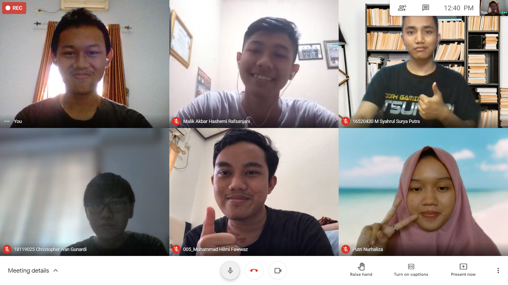

<!DOCTYPE html>
<html lang="en">
<head>
    <meta charset="UTF-8">
    <meta http-equiv="X-UA-Compatible" content="IE=edge">
    <meta name="viewport" content="width=device-width, initial-scale=1.0">
    <title>Wawancara Kru-ARC</title>
    <link rel="stylesheet" type="text/css" href="style1.css">
</head>
<body>
    <header>
        <div>
            <h1>Wawancara Kak Ivan</a></h1>
        </div>
    </header>
    <div class=card>
        <p>Saya mewawancarai Kak Christopher Ivan Gunardi dari angkatan 19 jurusan Teknik Telekomunikasi
        Asal dari Bekasi Unit lain yang diikuti ARC dan UKT | DSC.
        Bahasa pemrograman favoritnya javascript.
        Latar Belakang kak ivan membuat web yaitu Supaya ngegampangin apply intern atau pekerjaan web 
        dev atau software dev, In other words bisa nunjukin skill.
        kak Ivan Belum pernah intership
        Menurut kak Ivan Jurusan Telekomunikasi dan WebDev tidak ada hubungannya. Untuk intern 
        atau kerja kedepannya lebih suka web dev, soalnya lebih seru dibanding telekomunikasi. Di 
        telekomunikasi banyak fisikanya dan ga begitu suka fisika. Daspro dan PAR menentukan minat 
        kebanyakan anak STEI.
        Perbedaan STI dan IF yaitu kalua IF lebih dalem coding, STI lebih ke manajemen. Tips & trick 
        semester 2 jangan nunda nunda tugas, harus siap carry anggota kelompok yang sering ilangilangan, siap mental, dan jangan nyontek. taun lalu ketauan banyak nyontek banyak buat
        kelompok, ada jawaban satu anak yg kesebar ke banyak circle, dosen memberikan ultimatum, 
        ngaku dan ngasi tau siapa aja yg nyontek, yg ga ngaku ngulang Di PRD biasasnya mainan 
        lego, tetapi tergantung dosen dan biasanya rada akhir.
        Cara memotivasi diri sendiri yaitu Ingat kalau ada orang lain yang lebih bawah dari pada kita.
        Tempat belajar untuk membuat CV yaitu di internet banyak, disalin templatenya terus masukin 
        data kita, kalo mau lebih dalam dikit lewat youtube.
        Pernah Nugas sampe jam 2 paling lama waktu tubes, belum pernah sampe ga tidur. Rata rata 
        banyak unit anak stei yaitu sama seperti fakultas lain, 1 atau 2 unit. Di ARC biasanya Ngoding, 
        project, ngumpul ngoprek. Waktu kumpul di sekre bebas tidak ada jadwal pasti.
        Kegiatan ITB kalua Offline pada awal masuk yaitu Daful > Ngambil Jamal KTM > OSKM > 
        Seminar + Kumpul-kumpul > OHU > Kuliah. Saat kader Unit ketika offline yaitu lebih terasa 
        (Diteriakin, dimaki). kesimpulannya Offline bener2 lebih rame daripada online. 
        </p>
        
    </div>
    
</body>
</html>